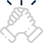
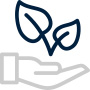
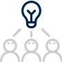

경영철학
경영이념
산업인의 사명에 투철하고, 능률과 창의로써 저마다의 소질을 계발하는 보람찬 일터를 만들며, 인간 생활의 풍요와 인류 문명의 발전에 이바지한다.
- 산업인의 사명에 투철
- 능률과 창의
- 소질 계발
- 인류문명의 발전 이바지
-
- 사업인의 사명에 투철하고
- 코오롱이 산업의 한 구성체임을 자각하고자 우선 산업인으로서의 투철한 사명을 가져야하며, 이는 곧 코오롱이 무엇보다도 산업의 발전에 일차적인 기여를 해야하는 역할과 사명을 제시합니다.
-
- 능률과 창의로써
- 코오롱이 경영을 전개해 나가는 일상적인 행동의 기준으로써 경영 최대 논리인 능률과 새로운 기풍을 진작하는 창의를 함과 동시에 경영의 판단 기준으로 삼겠다는 의지를 나타내고 있습니다.
-
- 저마다의 소질을 계발하는
- 구성원 개개인에게는 소질의 계발을, 조직 전체로는 보람을 충분히 느끼는 일터를 만드는 것을 가장 중요한 결과로 삼겠다는 것을 뜻합니다.
-
- 인간생활의 풍요와 인류문명 발전에 이바지
- 경영활동 결과가 결국은 경영활동에 의한 생산물에 의해 고객만족 뿐아니라, 인간생활의 풍요에 기여하고 나아가서는 인류문명의 발전까지도 기여한다는 것을 나타내는 것으로 경영 활동의 최종적인 목적을 표현합니다.
경영방침
- 01최고의
경쟁력 - 02독특함과
차별화 - 03사랑받는
코오롱
-
최고의 경쟁력을 갖춘 나 individual excellence
최고의 개인경쟁력을 갖춘다는 것은 세계와 겨룰 수 있는 경쟁무기를 가지고 있다는 의미 외에 유능한 경영자로서 성장할 수 있는 기량을 갖추고 있는 것을 뜻합니다.기술적 기량, 인간적 기량, 개념적 기량, 으뜸의 지위 등이 그 요소입니다.
-
독특함과 차별화된 우리 uniqueness
개인이든 집단이든 남과 유사할 수는 있어도 똑같을 순 없습니다. 흉내내지 않고 문제의 본질이나 상황의 핵심에 접근해서 행동을 취하고 문제를 해결하려고 노력할 때 우리는 우리만의 독특하고 차별화 된 전략과 행동 양식을 가질 수 있으며, 우리 전체가 하나라는 것도 잊지 말아야합니다.
-
가장 사랑받는 코오롱first choice of customers
고객이 코오롱 제품을 사용했을 때 만족을 넘어선 기쁨과 행복 즉 감동을 느낄 수 있도록 기업의 역량을 집중시켜 최고 품질의 제품과 서비스를 제공하고 어떠한 일이 있어도 고객과의 약속과 신용을 지킴으로써 고객으로부터 전폭적인 신뢰를 획득하려고 노력해야 합니다. 고객의 신뢰로부터 선택 받는 코오롱, 고객에게 가장 사랑 받는다는 것은 코오롱의 제품과 서비스에 대한 감동적 경험을 통해 구축된 고객의 신뢰를 바탕으로 경쟁제품보다 우선적으로 재 구매하고 구전을 통해 고객이 늘어남으로써 해당분야에서 가장 선호하는 회사가 되는 것을 말합니다.
코오롱정신
-
새로운 생각
창의적이고 전략적인 사고
진취적이며 미래지향적 사고 -
당당한 자세
자신있고 용기있는 태도
도덕적이고 윤리있는 행동 -
뜨거운 열정
일에 대한 끝없는 열정
성공에 대한 확신과 헌신 -
완벽한 실행
빈틈없고 철저한 일 처리
결과에 대한 자부심